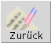
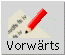
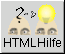
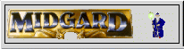
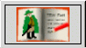
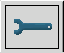
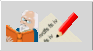

Über das Pulldownmenü werden einige der grundlegenden Programmfunktionen von MAGUS zur Verfügung gestellt.
(Das die Menüs sind z.Z. nur zum Teil implementiert.)
 |
Neuer Abenteurer:
MAGUS wird für einen neuen Abenteurer vorbereitet. alle Daten eines vorhergehenden Abenteurers werden gelöscht
und auf die Default-Werte zurückgesetzt. |
 |
Abenteurer speichern:
Der aktuelle Abenteurer wird in einer xml-Datei gespeichert. |
 |
Abenteurer Laden:
Ein bereits vorhandener Abenteurer wird geladen |
 |
LaTeX-Abenteurerblatt:
Es wird eine LaTeX-Ausgabe des Abenteurerdokuments des aktuellen Abenteurers erzeugt und in eine
PDF-Datei umgewandelt. Diese wird mittels eines Viewers (z.B. dem Acrobat-Reader) angezeigt. Dieses Dokument kann seperat
gedruckt und gespeichert werden. (In der Windowsversion gibt möglicherweise Einschränkungen) |
|  |
Zurück/Undo:
Die letzte Aktion wird zurückgenommen. (Noch nicht voll implementiert) |
|  |
Vorwärts/Redo:
Eine Rückgängig gemachte Aktion wird wiederhergestellt. (Noch nicht voll implementiert) |
 |
Menü:
Über das Menü lassen sich einige Grundlegende Eigenschaften von MAGUS steuern. Es ist jederzeit auch über
die rechte Maustaste aufrufbar. Weitere Informationen zum Menu gibt es auf dieser Seite. |
 |
Info:
Hinter dem Info-Button verbirgt sich das Infofenster von MAGUS, welches bereits beim Programmstart zu sehen ist. |
 |
Hilfe:
Dieser Button führt zu einer kleinen Online-Hilfe. |
|  |
HTML-Hilfe:
Über diesen Button können diese Hilfeseiten aufgerufen werden. |
 |
Schließen:
Magus wird beendet
Änderungen werden zur Zeit nicht(!) automatisch gespeichert, es gibt jedoch eine Abfrage. |
|  |
Info-Seite:
Allgemeine Informationen über MAGUS |
 |
Grundeigenschaften:
Auf dieser Seite werden die Grundeigenschaften eines Abenteurers festgelegt. |
 |
Lernschemata:
Auf dieser Notebook-Seite befinden sich die Lernschemata
|
 |
Steigern:
Auf dieser Seite erfolgt das Steigern des Abenteurers
|
|  |
Abenteurerbeschreibung
Diese Seite des Notebooks ermöglicht die eingabe einer Beschreibung des Abenteurers
|
 |
Ausrüstung
Die Ausrüstung eines Abenteurers läßt sich auf dieser Seite zusammenstellen und verwalten.
|
|  |
Optionen
Die grundlegenden Optionen von MAGUS lassen sich hier festlegen
|
|  |
News und Geschichte:
Diese Notebookseite enthält zum einen eine Liste der Veränderungen des Programms, andererseits
werden hier einzelne Schritte bei der Erschaffung, bzw, Verwaltung eines Abenteurers protokolliert und können gegebenenfalls
Rückgängig gemacht werden.
|
Am unteren Rand, ebenfalls ein Griffelfeld und permanent sichtbar, befindet sich die Statuszeile, in der verschidene
Programmmeldungen erscheinen.